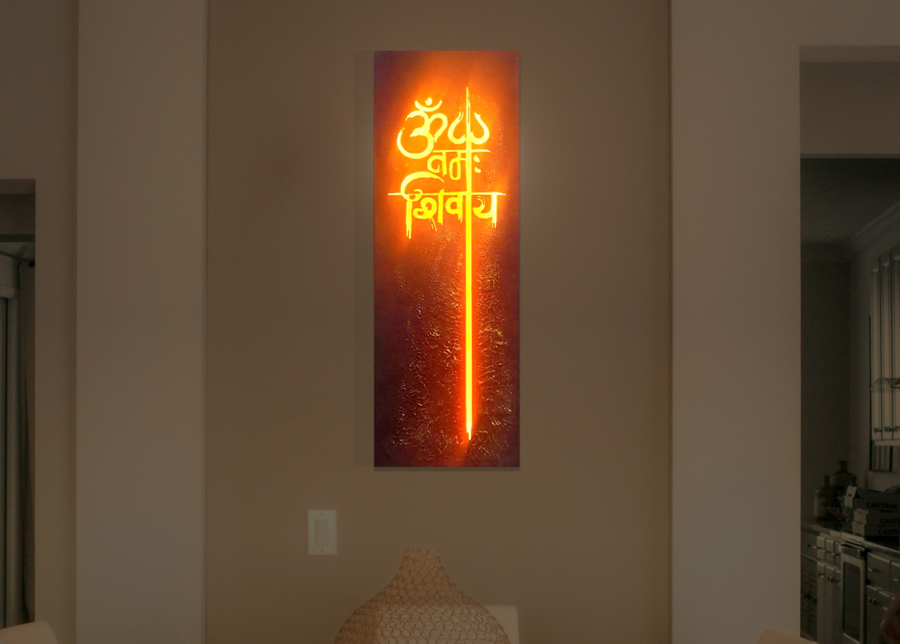

Пробуди энергию света в своем доме, офисе или студии!
Бренд основан в Италии. Через эту узкую дверь мы растворяемся в единении с духом, который является центром везде и нигде. Из этой Точки, которая присутствует повсюду, все вещи сливаются обратно в Бытие через вибрацию,звук и свет.